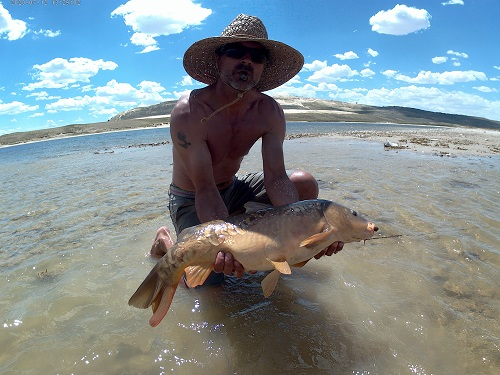
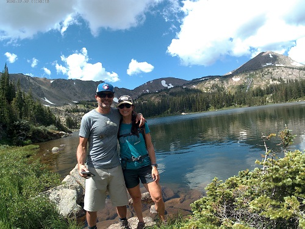
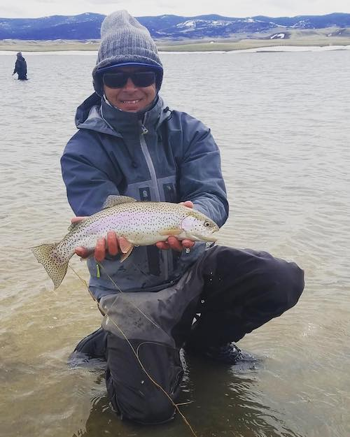
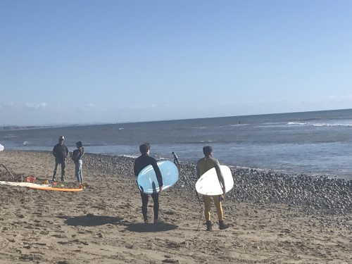
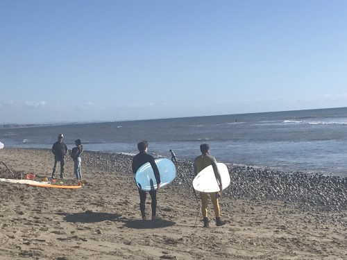

Pandemic continues, but there really hasn't been an effect on fishing and camping...other than more people than normal.
Hit the Middle Fork of the Powder, Taylor Rez, Spinney, and Seminoe.


Northgate: 1,550 cfs
Clear Creek Golden: 750 cfs
Browns Canyon 2,270 cfs
CO River Catamount 2,390 cfs
Eagle River Avon 1,820 cfs
Gunnison River in town 2,040 cfs
Yampa River in town 2,300 cfs
Elk River Milner 2,450 cfs
Spinney for the opener (April 29), and Diamond the following 2 weeks.
Weather permitting, Diamond is fantastic. Still cold and some snow banks. Fish are in the same spot as last year.
Spinney was fun for the opener, and still producing huge fish.

Things are starting to re-open
Got our last suburban ski in, and getting caught up on home improvement projects while travel is still discouraged.
Schools and restaurants are still closed at this time.
The only concern at this time is Covid 19.
The snowpack has been excellent since February, but ski areas and travel in general has been banned.
Schools and businesses are closed at this time.
 
